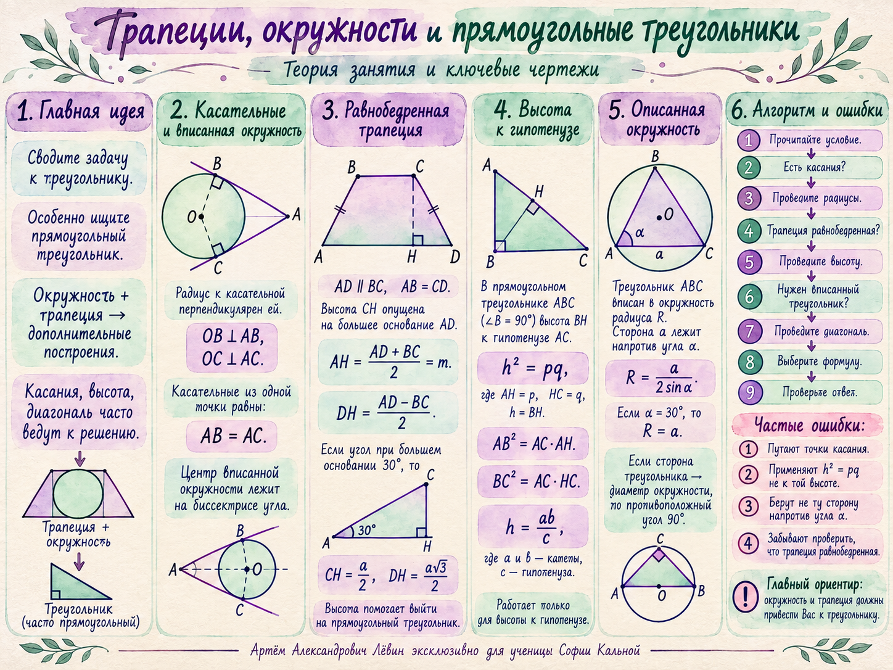

София Кальней · 25 сентября 2026 · ОГЭ
Главный маршрут занятия: перевести конфигурацию с окружностью и трапецией к прямоугольному треугольнику, затем применить равные касательные, биссектрисы, высоту к гипотенузе или формулу радиуса описанной окружности.

Опорная теория
В задачах на касательные дополнительное построение не нужно изобретать: радиусы в точки касания и биссектрисы углов дают структуру, из которой извлекаются длины и прямые углы.
Модель 1
Если меньшее основание равно 4r/3, то равные касательные дают короткий отрезок r/3. Биссектрисы соседних углов образуют прямоугольный треугольник, а радиус к боковой стороне становится высотой к его гипотенузе.
Модель 2
Диагональ переводит задачу о трапеции в задачу о треугольнике, вписанном в ту же окружность. Высота к большему основанию даёт прямоугольный треугольник и выражает диагональ через боковую сторону и среднюю линию.
Опорная теория
Эти формулы работают именно для высоты, проведённой из вершины прямого угла к гипотенузе. Их удобно получать из подобия трёх прямоугольных треугольников.
Пусть BH — высота к гипотенузе AC, AH = p, HC = q. Треугольники ABH и BCH подобны по двум углам. Из отношения сходственных сторон:
После перемножения крест-накрест:
Контроль
Перед подстановкой в формулу сначала проверьте, что конфигурация действительно соответствует её условиям.
Путь А · 5 заданий
Условия соответствуют тренировочному блоку пособия. Перед вычислениями выполните чертёж и отметьте применяемое свойство.
Самопроверка
Отмечено: 0 из 7